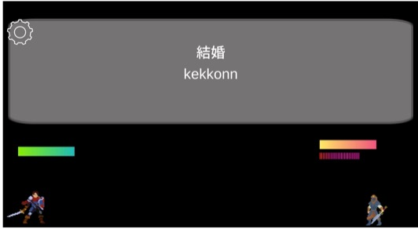
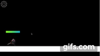
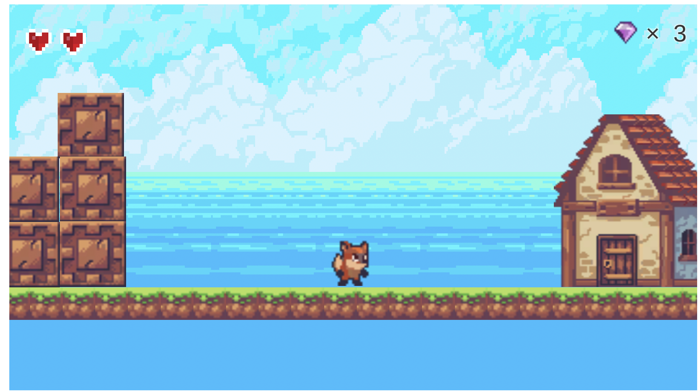

Tの個人アプリ開発紹介ページ
TypingQuest


このゲームはタイピングゲームです。目の前に立ちはだかる敵を倒すため、素早くタイピングをして攻撃しよう！！
使用言語: C#(Unity）
製作期間: 1ヶ月
TypingAdventureを遊ぶ
Q&A
Q1. なぜ作ろうと思った？
A1.（ゲームをして楽しむ）×（実用性があるスキルが身につく）といったコンセプトのゲームを作りたかったからです。
そこで、考えに至ったのはタイピングゲームでした。ですが、寿司打のようなタイピング重視のゲームというよりは、タイピングはあくまで手段として扱い、
本筋はゲームに集中してほしいという思いで開発しました。ですが、そこに到達するのはかなり苦労しましたし、まだタイピング重視になってしまう点も多いので
改善すべき点です。
Q2. 制作にはどれくらい時間を費やした？
A2. 制作期間は1ヶ月としていますが、1日平均5時間でやっていたので結構苦労しました。デバッグする時にひたすらタイピングをするので腱鞘炎になりました。
SkyIsland

このゲームは2DアクションRPGです。プレイヤーを動かして様々なステージをクリアしていこう!
使用言語: C#(Unity）
製作期間: 1ヶ月半
SkyIslandを遊ぶ
Q&A
Q1. なぜ作ろうと思った？
A1. このゲームは私が一番初めに作ったゲームです。正直、出来栄えはしょぼいですが、自分なりに切磋琢磨して制作した思い出のゲームです。
Q2. 一番苦労した点は？
A2. ジャンプ制御が一番苦労しました。ジャンプ制御だけで、かなり長いスクリプトコードを書いた気がします。今でも挙動が怪しいのですが、ジャンプ制御は本当に難しいです。数学の知識が自分には足りないと改めて認識しました。
それでも、ネット上で調べて一番丸く収まる形で作成しました笑。
課題遂行リスト

このアプリは課題を管理するWebアプリです。膨大な課題がある高校生、大学生などにオススメ。
使用言語: JavaScript
製作期間:
Q&A
Q1.なぜ作ろうと思った？
A1. 私が忘れっぽいのが原因で作成しました笑。また、ちょうどJavaScriptを独学で学んでいたので、そこで何か作ってみようと思って考えついたのが課題管理リストです。
なるべく操作をわかりやすく直感的に行えることを意識しました。
Q2. 一番苦労した点は？
A2. ジャンプ制御が一番苦労しました。ジャンプ制御だけで、かなり長いスクリプトコードを書いた気がします。今でも挙動が怪しいのですが、ジャンプ制御は本当に難しいです。数学の知識が自分には足りないと改めて認識しました。
それでも、ネット上で調べて一番丸く収まる形で作成しました笑。